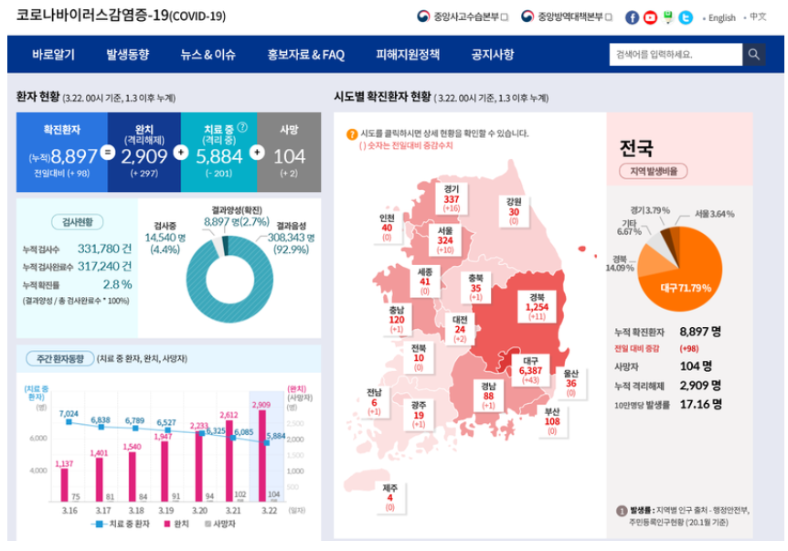
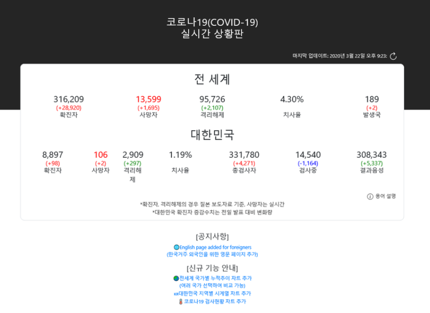
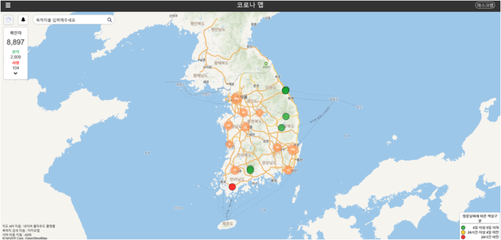
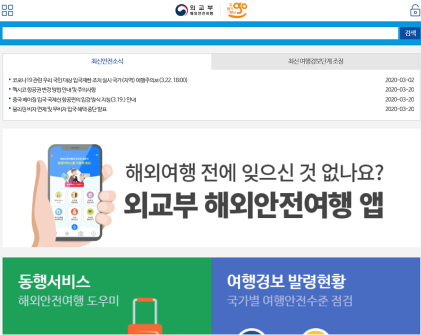

|  |
코로나바이러스감염증-19우리나라의 코로나19발생 현황과 대응 지침 등을 안내하고 있는 사이트로, 사이트 하단을 보면 가까운 선별 진료소 및 국민 안심 병원도 찾을 수 있다. 그 외에도 유용한 정보가 많이 있어 관련 정보에 대해 알아보고 싶다면 추천한다.(그림을 클릭) |
|  |
코로나19실시간 상황판대한민국 상황뿐만 아니라 전 세계 국가별 상황 차트를 볼 수 있는 사이트로, 확진 환자 수는 치료 중 + 사망 + 완치 판정받은 사람들을 총합한 숫자이며, 의심환자 수는 검사 중 + 음성 판정받은 사람들을 총합한 수이다.(그림을 클릭) |
|  |
코로나맵코로나 확진자가 방문한 곳을 알 수 있는 사이트로, 확진자가 다녀간 지 24시간 미만(빨강색), 24시간 이상 ~ 9일 미만(노란색), 9일 이상 경과된 곳(초록색)을 확인할 수 있다.(그림을 클릭) |
|  |
외교부 해외안전여행코로나19 관련 우리 국민 대상 입국 제한 조치 국가와 이동 제한 안전 공지 등 최신 안전 소식과 최신 여행경보 단계 조정 상황을 확인할 수 있다.(그림을 클릭) |